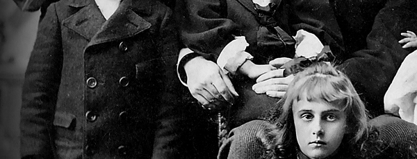
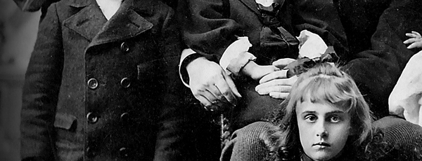
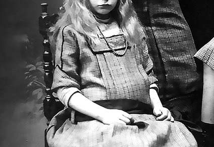
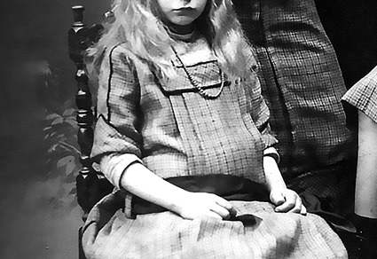

Reich Research
Genealogical Project of The Reich Family


 



 



Reich Research is a genealogical project of The Reich Family. The site serves as a depository for genealogical records, historical accounts, and memories of those who have passed. Genealogical research is conducted thoroughly using such resources as FamilySearch.org, JewishGEN, and more. Reich Research writes articles and memorials based on research documents that include but are not limited to: census records, marriage records, death certificates, military records, naturalization papers, ship manifests, and more. All memorials and articles are private and are intended only for family members and fellow researchers unless otherwise decided to be of great importance to the public historical record, which would currently include the articles for Polly Hannah Klaas and her grandfather, Dr Eugene Reed; and Maria Katsaris and her father, Steven Katsaris.